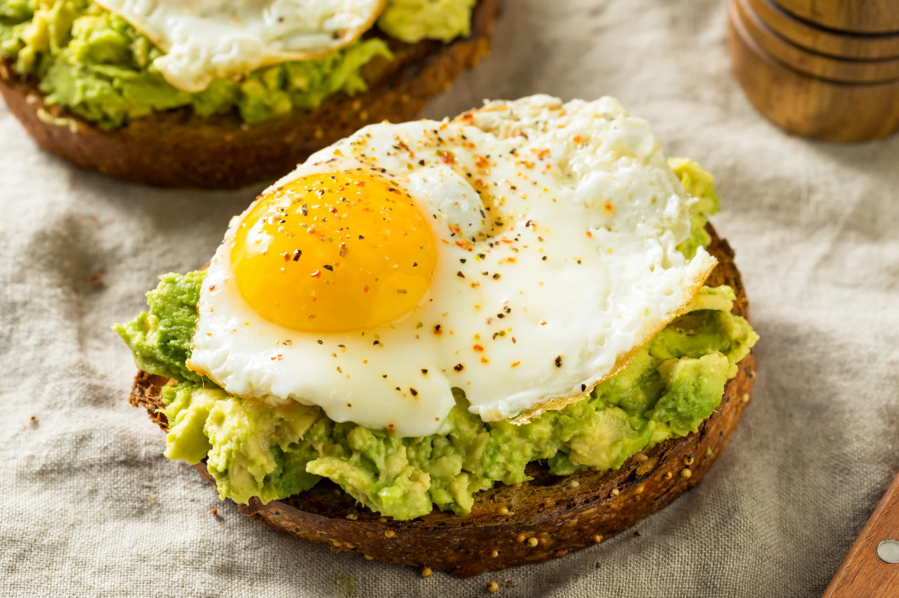
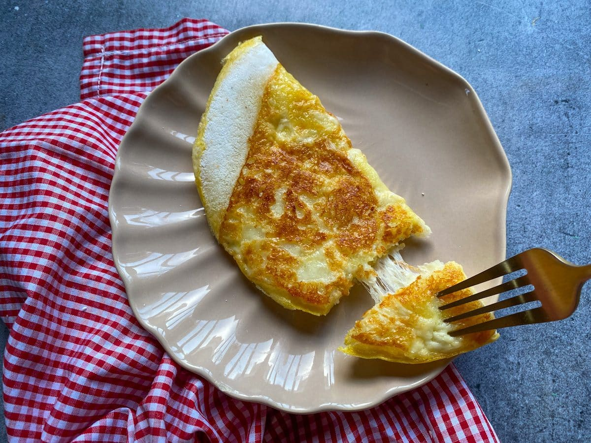
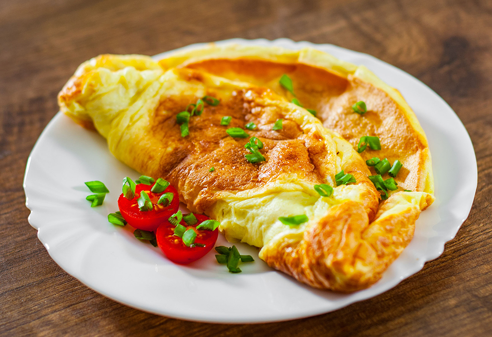
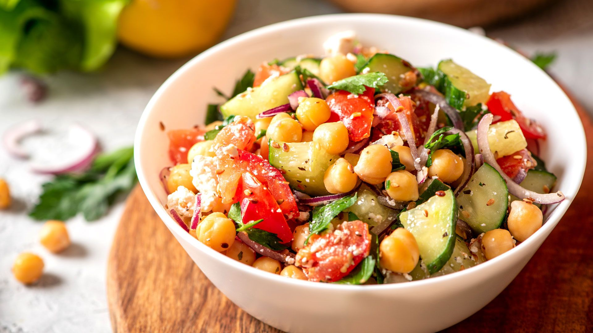
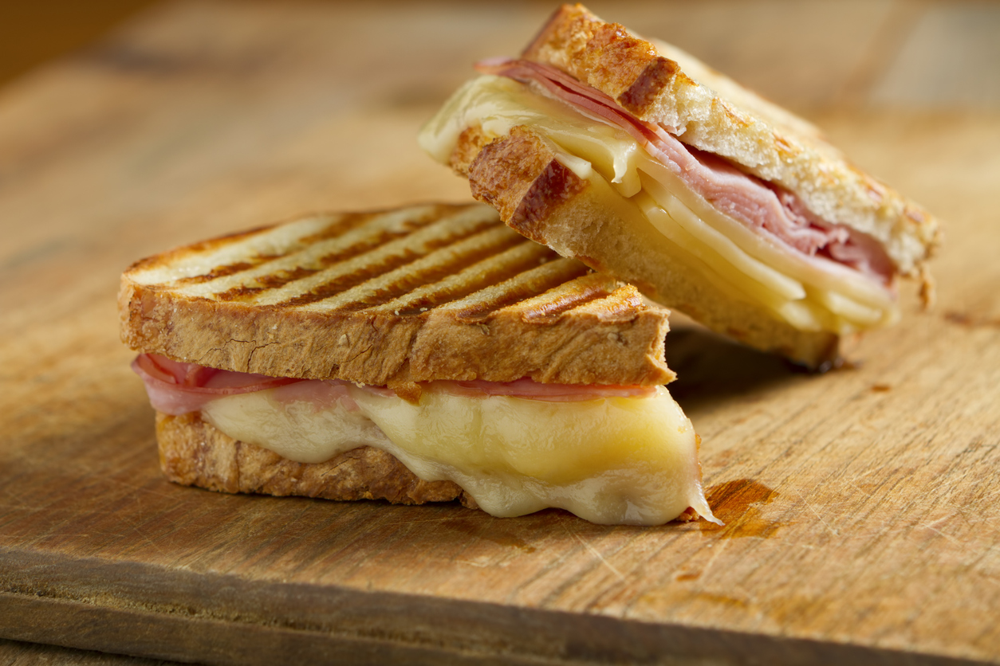
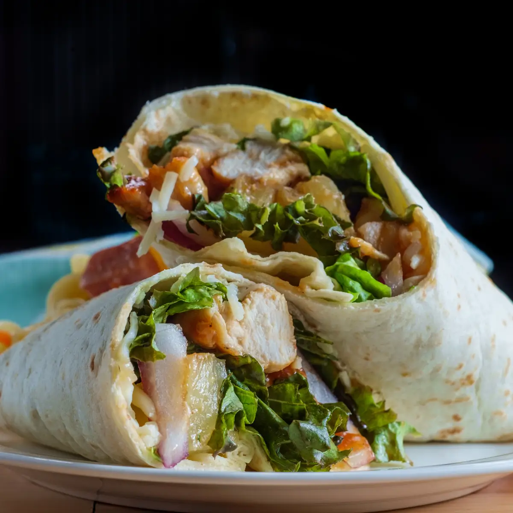
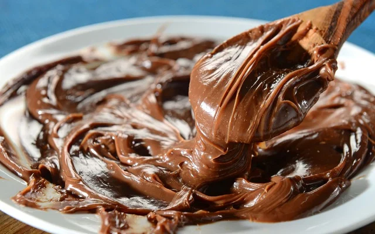
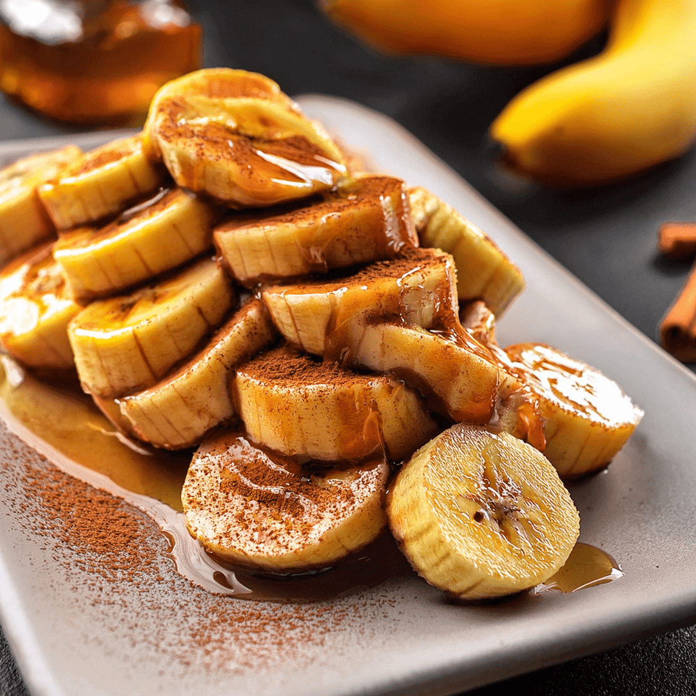

Todas as receitas
Do café da manhã à sobremesa. Favorite, avalie e marque o que funcionou para você. Abra uma receita para ver ingredientes, fotos e anotar.
Nenhuma receita encontrada. Tente outra busca ou limpe os filtros.
Café da manhã
-
10 min -

8 min -

5 min -

10 min
Pratos principais
-

20 min -

25 min -

10 min -

10 min
Lanches
-

10 min -

10 min -

8 min -

10 min
Sobremesas
-

5 min -

10 min -

15 min -

10 min